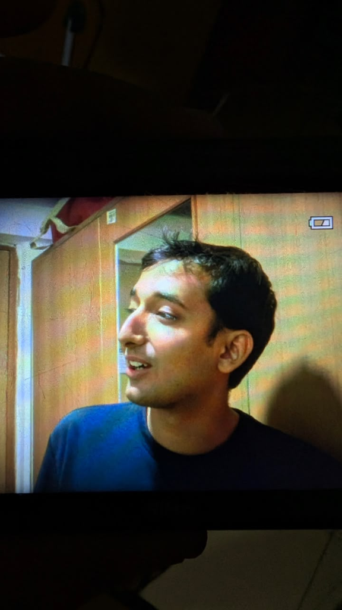
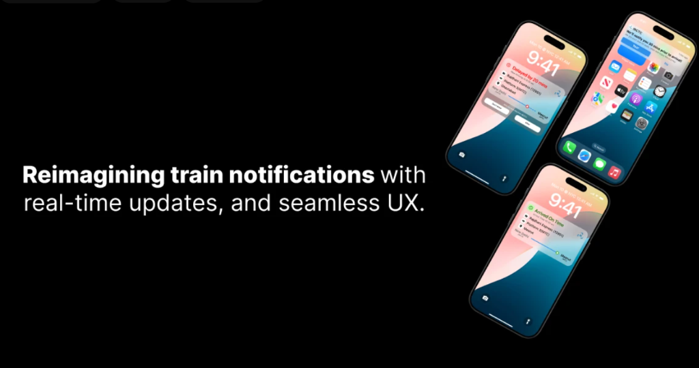
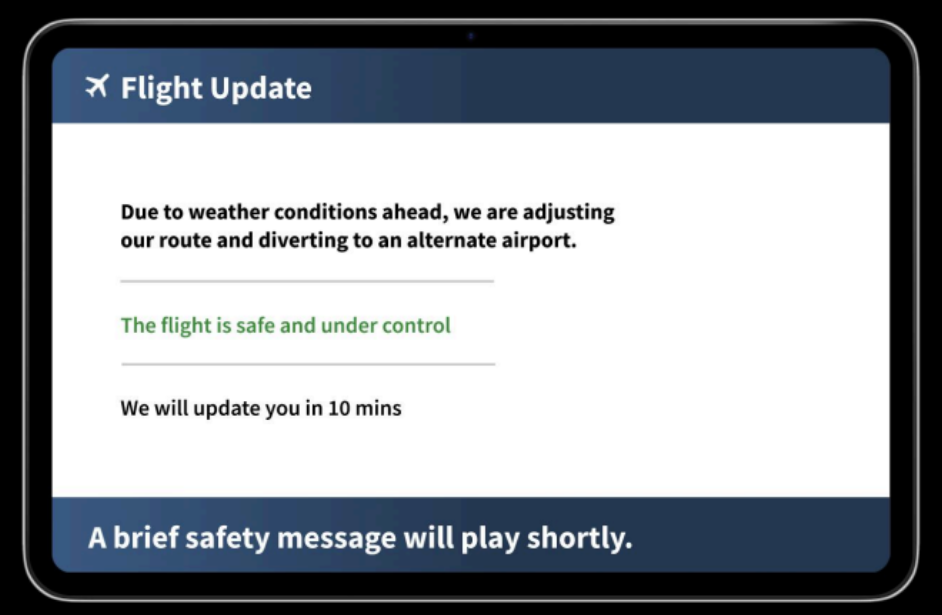
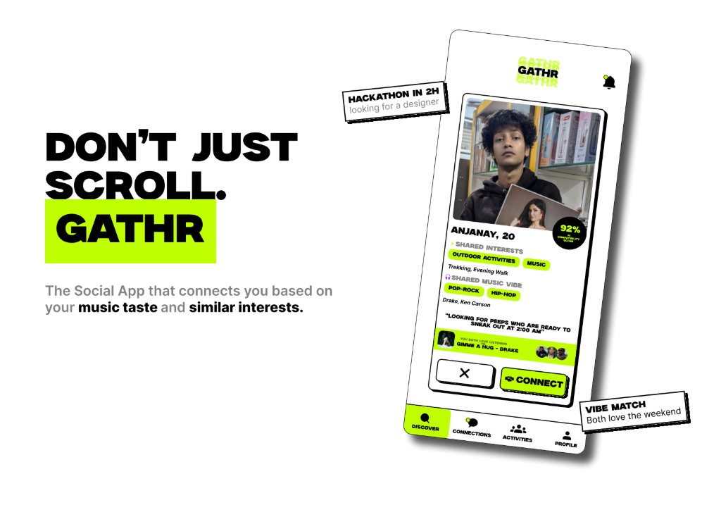
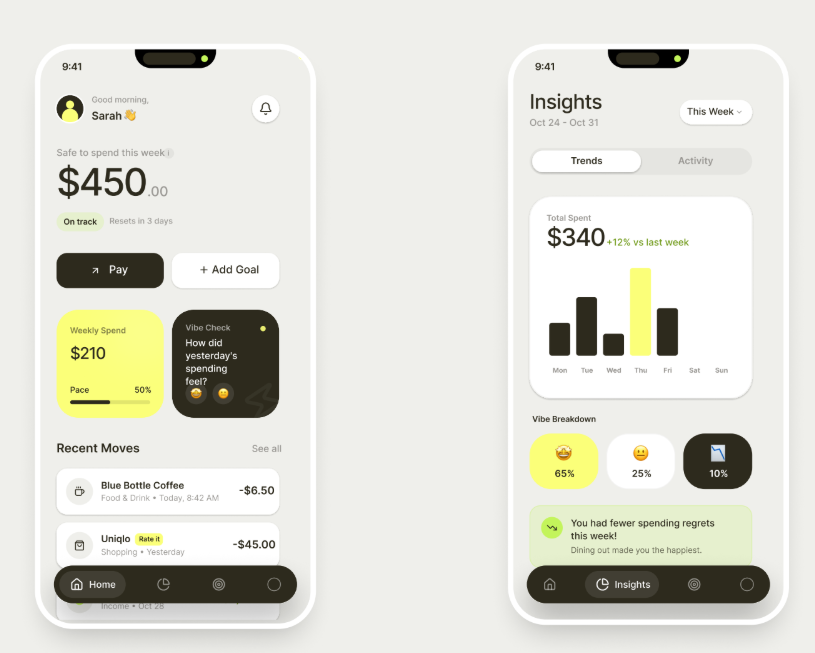
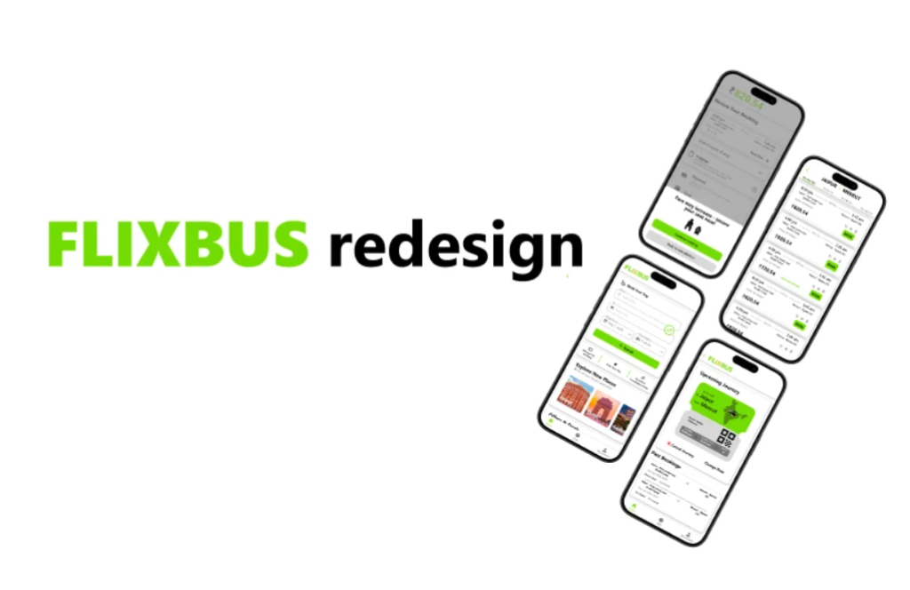

ARYAN
YADAV
"Designing experiences. Driving stories."

Where Code
Meets Asphalt.
Design and automobiles may seem like different worlds, but to me, they're built on the same principle: every detail matters.
I'm Aryan, a UI/UX designer, engineering student, and automotive journalist who enjoys creating products that people don't have to think about using. From interactive interfaces to car reviews, I love breaking down complexity into experiences that feel simple, engaging, and human.
Driving the
Narrative.
Reviews, technical deep dives, and opinion pieces published across major Indian automotive media.
View All ArticlesDrivenByAryan
Duster 1.3 Impressions
First drive review of the new Renault Duster 1.3 turbo.
Why cars are losing physical buttons
Innovation or cost cutting in modern interiors?
Why Maruti waited on EVs
Analyzing Maruti Suzuki's strategy for electric vehicles.
Honda City Facelift impressions
A look at the Honda City and its loyal following.
Digital Product Design.
Live Train Notification
Problem: Most railway apps fail to deliver timely, contextual information seamlessly during crucial moments like delays or platform changes.
Research: Surveys showed 61% of users check apps multiple times before boarding, with 50% feeling frustrated by the repetitive process.
Outcome: A proactive, real-time lock screen notification system that delivers glanceable updates without needing to open the app.
View on Behance
Calm Communication
Problem: Passenger anxiety during irregular flight events is exacerbated by uncertainty, silence, and vague announcements.
Outcome: A design framework prioritizing safety and authority, avoiding emergency language or technical jargon to maintain a calm environment.
View Google Drive Folder
GATHR
Problem: Gen Z faces record-high loneliness. Social apps prioritize "profile aesthetics," causing awkward coordination and flaking.
Research: Users feel 80% safer with college verification and are more likely to meet if the activity is determined first.
Outcome: A hyper-local social platform featuring an activities feed and a scarcity UX model to reduce flaking.
View Document
Finance Tracker
Problem: Users face record-high levels of financial disconnection. Apps prioritize aesthetics over intent, leading to abandonment.
Outcome: An action-first financial tracking experience with a high-contrast Neo-Brutalist UI to encourage commitment and clarity.
View Document
FlixBus Redesign
Problem: The booking flow leaves users confused, especially when handling multiple passengers or selecting seats.
Research: Cluttered UI, missing multi-seat booking, redundant return dates, and no exit confirmations caused major friction.
Outcome: A simplified, user-friendly interface enabling multi-seat selection, clear ticket cards, and easy booking management.
View on Behance
Cinematic Captures.
Professional
Track.
UI/UX Design Intern
Feb 2026 — May 2026Worked closely with product and design teams at an early-stage startup building the infrastructure for artist-owned superfandom. I took ownership of creating wireframes, developing UI components, and refining the overarching design system. By actively prototyping and testing, I helped smooth out complex user flows to ensure artists and fans had a seamless, highly engaging digital experience.